生活中的常识: 记账.
账:就是数据/信息,
记账-->就是储存数据/信息
生活中,账一般记在哪儿呢?
比如:账本上, 门上,墙上.日历上.
问上:10/12,老孙头借豆种50斤
无论记在哪儿: 记录的都是信息, 变化的只是信息的载体.
随着现代社会数据的急剧增多,我们用更高效的记录信息的方式.
来一个班级学生档案
姓名,年龄,家乡
姓名:李四 年龄:24 家乡:密云 姓名:张三 年龄:22 家乡:怀柔
60个学生,就需要60个纸片, 而且这60个纸片,上面字有重复的. 姓名/年龄/家乡
信息有冗余,想个办法更让信息更有条理.
|
姓名 |
年龄 |
家乡 |
|
张三 |
22 |
怀柔 |
|
李四 |
24 |
密云 |
好处:再多一个学生的话,只需要添加一行数据, 姓名/年龄/家乡不用重写了.
班级要考试,考试成绩,也要记录起来
|
姓名 |
科目 |
成绩 |
|
张三 |
语文 |
68 |
|
李四 |
思想品德 |
23 |
现在这一个班级里, 有档案表/成绩表/违纪表/就业登记表.......
这些表,都是用来管理公益1期班的信息用的.
因此,这些表,放在一个档案袋里-------档案袋是 数据库
公益1期有档案袋(库1), 公益2期有档案袋(库2) -----> 交给王大婶子来管理
王大婶管理着 许多库, 我们想要数据时,找王大婶.
王大婶子 -->数据库服务器
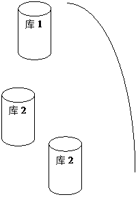
一台服务器下有多个库,一个库下有1到多张表, 表有多行多列的数据.
作为WEB开发程序员, 和表的操作相对多.
数据库服务器是不是mysql呢?
答: 对于数据库存储数据来说,国际上有sql标准.
如:列类型,sql语法等是有ISO标准的.
很多软件开发商,遵守sql标准,来开发一套软件,用来储存和管理数据.
这套软件,就可以称为数据库管理系统.
就好比说,看网页可以用 firefox,IE,chrome,
管理数据呢,可以用mysql, oracle,IBM DB2, sqlite, postgresql
这些软件都能够用来管理数据.
数据库大体上要遵循sql标准,但未必100%遵循.
答:不是的,各厂商的产品可能对sql标准的执行有微小差异.
比如 mysql就没有全连接 full join, 没有sql server中的 top N这种用法
就好像,html有w3c标准来约束,但各浏览器也有解析不兼容的地方,但是少数.
为什么要先用mysql来学习?
答:
1:mysql和linux php,apache,配合紧密,LAMP架构.
2:mysql开源,免费.
请同学们有时间也可以关注一下postgresql
答:postgresql也是一个开源数据库,而且sql标准执行方面,比mysql要严格.
Mysql-->卖给->sun-->oracle, 版权开源方面前途未卜.
安装Mysql,装哪一个版本?
答:对于软件,尤其是开源软件,不要追求最新的版本.
往往最新的版本,意味着bug多,新用户往往成了"小白鼠"
开源软件的版本,一般会有beta版,stable版.
我们尽量选用稳定版.
目前,比较稳定的2个版本,mysql5.1, mysql5.5
连接数据库:以命令行连接为例:
注意:如果在命令提示下,出现如下提示:

则说明:没有配置环境变量,导致系统找不到mysql.exe.
解决:
1:配置环境变量,指定mysql\bin目录
2:每次进入到mysql\bin目录,再运行mysql
3: 如何连接服务器
服务器地址( 可用IP,域名) : 端口(3306)
用户名
密码
Mysql -h localhost -uUserName -pPassWd
-h 如果不写,则默认连localhost
如果看到下面的图标
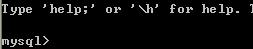
则说明连接服务器成功了.
澄清一个概念
连接成功后,:命令行黑窗口 和 mysql服务器是什么关系?
答: 客户端 client --> 服务端 server的关系.
就好像 你的浏览器与--->163网站的服务器的关系一样.
还有没有其他mysql客户端?
答:有,navcat,mysqlfront,phpMyAdmin,SQLyogEnt
入门最基本语句
当连上服务器后,我们首先面对的是?
答:是库,库有1个或多个,因此我们要想对表/行做操作的话,
得先选库.
查看一下所有的库,怎么办?
Mysql>Show databases;
选库语句: Use 库名
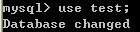
创建一个数据库: create database 数据库名 [charset 字符集]
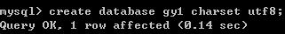
删除一个数据库: drop database 数据库名;
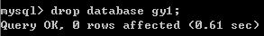
把数据库改改名?
Mysql中,表/列可以改名,database不能改名.
phpMyAdmin似乎有这功能? 他是建新库,把所有表复制到新库,再删旧库完成的.
当选了库之后,我们面对的是表
查看库下面的所有表: show tables;
先给大家提供一个简单的建表语句,供练习用
create table stu (
snum int,
sname varchar(10)
)engine myisam charset utf8;
/// engine是指表引擎,和性能特点相关,此处先照抄.
删除表: drop table stu;
修改表名:
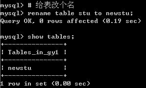
清空表数据: truncate 表名
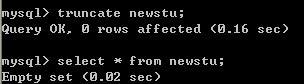
Truncate和delete是有区别的,
在于 truncate相当于删表再重建一张同样结构的表,操作后得到一张全新表.
而delete是从删除所有的层面来操作的.
Trucate相当于把旧的学籍表扔了重画一张,
Delete相当于用橡皮把学籍表的数据库擦掉.
如果决定全清空的下,truncate速度更快一些.
查看表结构
答: desc tableName; //查看表结构
|
Id |
title |
12: 解决字符集问题:
默认建表一般用utf8, 而我们在windows下窗口是GBK的,
因此,需要声明字符集.
Set names gbk;
发现的1小问题
语句打错以后应该退出本语句,再继续打新语句.也可以打\c,退出本语句.
如何破解数据库的密码:
1:通过任务管理器或者服务管理,关掉mysqld(服务进程)
2:通过命令行+特殊参数开启mysqld
Mysqld
--skip-grant-tables
3:此时,mysqld服务进程已经打开,并且,不需要权限检查.
4:mysql -uroot 无密码登陆服务器.
5: 修改权限表
A: use mysql;
B:update user set Password =
password('11111') where User = 'root';
C:flush privileges;
6:通过任务管理器,或服务管理,关掉mysqld服务进程.
7:再次通过服务管理,打开mysql服务.
即可用修改后的新密码登陆.
增删改查基本语法学习
增: insert
Insert 3问:
1: 插入哪张表?
2: 插入哪几列?
3: 这几列分别插入什么值?
Insert into TableName
(列1,列2....
列n)
Values
(值1,值2,....值n)
值 与 列,按顺序,一一对应
特殊: insert语句 允不允许不写列名
答: 允许.
如果没有声明列明,则默认插入所有列.
因此,值应该与全部列,按顺序一一对应.
例:建一张工资登记表
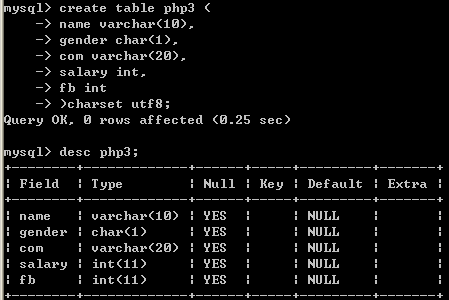
2:插入部分列
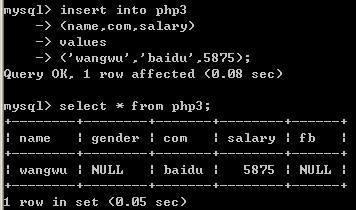
3:插入所有列
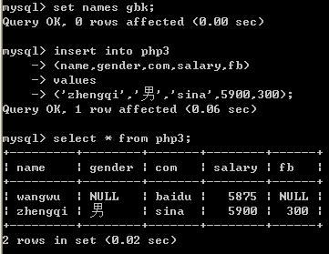
注:文中的set names gbk;是为了告诉服务器,客户端用的GBK编码,防止乱码.
4:插入所有的列的简单写法.

改: Update 语句
Update 4问
改哪张表?
改哪几列的值?
分别改为什么值?
在哪些行生效?
语法:
Update 表名
Set
列1 = 新值 1,
列2 = 新值2,
列n = 新值n.....
Where expr
例:
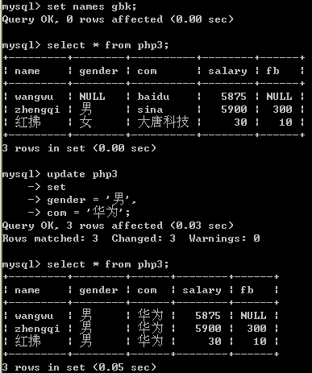
删除: delete
Delete 2问
从哪张表删除数据?
要删除哪些行?
语法:
Delete from 表名 where expr
例:
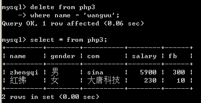
查: select
查询3问
1:查哪张表的数据?
2:查哪些列的数据?
3:查哪些行的数据?
语法:
Select 列1, 列2, 列3,...列n
From 表名
Where expr;
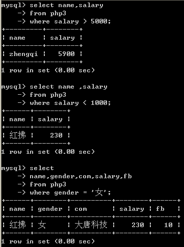
注: 如果取一张表的所有列, 可以用 * 代替所有列
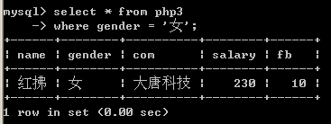
怎么建表?
以在A4纸上建表为例,
|
学号 |
姓名 |
家乡 |
入学年份 |
自我介绍 |
|
001 |
张三 |
衡水 |
2012 |
|
|
|
|
|
|
|
分析:我们只要把第一行,表头建好了,这张表也就完成了.
至于下面的001,张三,这不是表的概念,而是表中储存的数据.
其实,建表过程,就是一个画表头的过程,
从术语上讲,这张表有5个列,
建表的过程,就是一个 声明字段 过程
那么建表和列类型又有什么关系呢?
分析: 再看上面的表,A4纸是数据的存储空间,而A4的大小是有限的.
请问:你准备给学号留多宽? 给姓名留多宽? 自我介绍又留多宽?
自然的, 姓名如果留的过宽,比如20个字都能存,但是一般人的姓名,就三四字---浪费了.
如果留的过窄,导致存不下,更有问题.
对应的,A4纸空间有限,硬盘空间也有限,
我们建列时,自然想的是------能够容纳放置的内容,但是又不浪费.
存储同样的数据,不同的列类型,所占据的空间和效率是不一样的--这就是我们建表前要前列类型的意义.
所以---重点学列类型的存储范围与占据的字节关系.
列类型学习
mysql三大列类型
数值型
整型
Tinyint/ smallint/ mediumint/int/ bigint(M) unsigned zerofill
整型系列所占字节与存储范围的关系.
定性: 占字节越多,存储范围越大.
下图: 是具体的数字分析
Tinyint 1个字节 8个位 0 - 2^8-1 , 0-255
-2^7 ----> +2^7-1
分析:
Smallint 2个字节 , 16位 0----2^16-1 = 65535
-2^15 ---> +2^15-1, -32768 -> 32767
一般而言,设某类型 N字节
N字节 , 8N位.
0 ----> 2^8N-1
-2^(8N-1) ---> +2^(8N-1) -1;
对于int型 : 占的字节越多,存储的范围也越大.
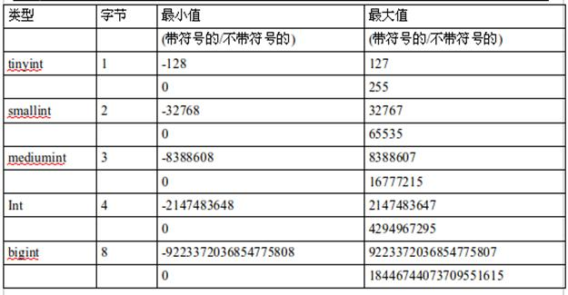
整型系统的可选参数 :
XXint(M) unsigned zerofill
例: age tinyint(4) unsigned ,或者 stunum smallint(6) zerofill;
Unsigned: 代表此列为无符号类型, 会影响到列的存储范围. (范围从0开始)
(不加unsinged, 则该列默认是有符号类型,范围从负数开始)
Zerofill: 代表0填充, 即: 如果该数字不足参数M位, 则自动补0, 补够M位.
1: 如果没有zerofill属性, 单独的参数M,没有任何意义.
2:如果设置某列为zerofill,则该列已经默认为 unsigned,无符号类型.
小数型
Float(M,D),decimal(M,D)
M叫"精度" ---->代表"总位数",而D是"标度",代表小数位.(小数右边的位数)
浮点数占多大的空间呢
答： float 能存10＾３８ ，10^-38
如果M<=24, 点4个字节,否则占8字节
用来表示数据中的小数,除了float---浮点.
还有一种叫定点decimal,定点是把整数部分, 和小数部分,分开存储的.
比float精确,他的长度是变化的.
空间上的区别:
Float(M,D), M<=24, 4个字节, 24 <M <=53, 8个字节
Decimal () ,变长字节.
区别: decimal比float精度更高, 适合存储货币等要求精确的数字,
见下例:
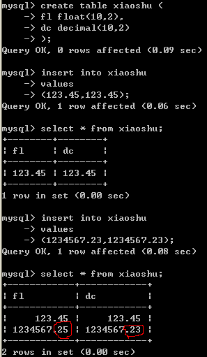
字符串型
Char(M)
Varchar(M)
Text 文本类型
日期时间类型
Date 日期
Time 时间
Datetime 时间时间类型
Year 年类型
Mysql 字符串类型
Char 定长类型
Char(M) , M 代表宽度, 0<=M<=255之间
例:Char(10) ,则能输入10个字符.
Varchar 变长类型
Varchar(M), M代表宽度, 0<=M<=65535(以ascii字符为例,utf822000左右)
类型
|
类型 |
宽度 |
可存字符 |
实存字符(i<=M) |
实占空间 |
利用率 |
|
Char |
M |
M |
i |
M |
i/M <= 100% |
|
Varchar |
M |
M |
i |
i字符+(1-2)字节 |
i/(i+1-2) < 100% |
0000000000
00\0\0\0\0\0 (char型,如果不够M个字符,内部用空格补齐,取出时再把右侧空格删掉)
注:这意味着,如果右侧本身有空格,将会丢失.
Varchar(10)
[2]张三
[3]二麻子
[4]司马相如
Char(8)
00000000
'Hello '
'hello '
Char(M)如何占据M个字符宽度?
答: 如果实际存储内容不足M个,则后面加空格补齐.
取出来的时候, 再把后面的空格去掉.(所以,如果内容最后有空格,将会被清除).
速度上: 定长速度快些
注意: char(M),varchar(M)限制的是字符,不是字节.
即 char(2) charset utf8, 能存2个utf8字符. 比如'中国'char与varchar型的选择原则:
1:空间利用效率, 四字成语表, char(4),
个人简介,微博140字, varchar(140)
2:速度
用户名: char
Char 与 varchar相关实验
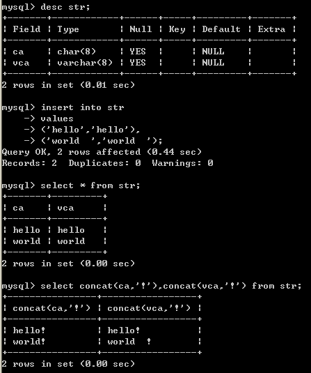
Text : 文本类型,可以存比较大的文本段,搜索速度稍慢.
因此,如果不是特别大的内容,建议用char,varchar来代替.
Text 不用加默认值
(加了也没用).
Blob,是二进制类型,用来存储图像,音频等二进制信息.
意义: 2进制,0-255都有可能出现.
Blob在于防止因为字符集的问题,导致信息丢失.
比如:一张图片中有0xFF字节, 这个在ascii字符集认为非法,在入库的时候,被过滤了.
日期时间类型
Year 年(1字节) 95/1995, [1901-2155],
在insert时,可以简写年的后2位,但是不推荐这样.
[00-69] +2000
[70-99] + 1900,
即: 填2位,表示 1970 - 2069
Date 日期 1998-12-31
范围: 1000/01/01 ,9999/12/31
Time 时间 13:56:23
范围: -838:59:59 -->838:59:59
datetime 时期时间 1998-12-31 13:56:23
范围: 1000/01//01 00:00:00 ---> 9999:12:31 23:59:59
timestamp
时间戳:
是1970-01-01 00:00:00 到当前的秒数.
一般存注册时间,商品发布时间等,并不是用datetime存储,而是用时间戳.
因为datetime虽然直观,但计算不便.
建表案例,某高端白领私密社交网站
定长与变长分离
常用与不常用列分离
|
主键 |
用户名 |
性别 |
体重(KG) |
生日 |
工资 |
上次登陆 |
个人简介 |
|
id |
Username |
gender |
weight |
birth |
salary |
Lastlogin |
intro |
|
列名称 |
列类型 |
默认值 |
是否主键 |
|
Id |
Int unsigned |
|
PRI |
|
Username |
Varchar(20) |
'' |
|
|
gender |
Char(1) /tinyint/enum(男/女) |
|
|
|
weight |
Tinyint unsigned |
|
|
|
Birth |
Date |
|
|
|
Salary |
Decimal(8,2) |
|
|
|
lastlogin |
Datetime |
|
|
|
intro |
Varchar(1500) |
|
|
这张表不够好,可以优化
分析:这张表除了username/intro列之外,每一列都是定长的.
我们不妨让其所有列,都定长,可以极大提高查询速度.
|
列名称 |
列类型 |
默认值 |
是否主键 |
|
Id |
Int unsigned |
|
PRI |
|
Username |
char(20) |
'' |
|
|
gender |
Char(1) /tinyint |
|
|
|
weight |
Tinyint unsigned |
|
|
|
Birth |
Date |
|
|
|
Salary |
Decimal(8,2) |
|
|
|
lastlogin |
Int unsigned |
|
|
Username char(10) 是会造成空间的浪费,但是提高的速度,值.
Intro char(1500) 却浪费的太多了,另一方面,人的简介,一旦注册完,改的频率也并不高.
我们可以把 intro列单独拿出来,另放一张表里.
|
列名称 |
列类型 |
默认值 |
是否主键 |
|
Id |
Int unsigned |
|
PRI |
|
Username |
char(20) |
'' |
|
|
intro |
Varchar(1500) |
|
|
在开发中,会员的信息优化往往是 把频繁用到的信息,优先考虑效率,存储到一张表中.
不常用的信息和比较占据空间的信息,优先考虑空间占用,存储到辅表中.
建表语法
所谓建表就是一个声明列的过程.
create table 表名 (
列名1 列类型1 列1参数,
列名2 列类型2 列2参数,
....
...
列名n 列类型n 列n参数
)engine myisam/innodb/bdb charset utf8/gbk/latin1...
修改表的语法
一张表,创建完毕,有了N列.
之后还有可能要增加或删除或修改列
Alter table 表名 add 列名称 列类型 列参数; [加的列在表的最后]
例: alter table m1 add birth date not
null default '0000-00-00';
Alter table 表名 add 列名称 列类型 列参数
after 某列 [把新列加在某列后]
例: alter table m1 add gender char(1)
not null default '' after username;
Alter table 表名 add 列名称 列类型 列参数
first [把新列加在最前面]
例: alter table m1 add pid int not null
default 0 first;
删除列:
Alter table 表名 drop 列名
修改列类型:
Alter table 表名 modify 列名 新类型 新参数
例:alter table m1 modify gender char(4) not null default '';
修改列名及列类型
Alter table 表名 change 旧列名 新列名 新类型 新参数
例:alter table m1 change id uid int unsigned;
作业: 让我们建一个电子商城, 如何来设计商品表.
再把商城表的字段,一个个删掉,再一个个加上.
并穿插改列操作.
??如果列类型改变了,导致数据存不下怎么办?
比如,int 改成smallint列. 如果不匹配,数据将会丢失,或者在mysql的strict_mode下,修改不了.
为什么建表时,加not null default '' / default 0
答:不想让表中出现null值.
为什么不想要的null的值
答:
不好比较,null是一种类型,比较时,只能用专门的is null 和 is not null来比较.
碰到运算符,一律返回null
效率不高,影响提高索引效果.
因此,我们往往,在建表时
not null default ''/0
Select
5种子句详解
1:where子句 条件查询
查出一张表的所有行,所有列
Select * from tableName;
查出一张表的所有行,部分列.
Select id,name,salary from tableName
查出一张表的所有列,部分行(id >=2 的行)
Select * from tableName where id >=2;
模糊查询:
案例:想查找"诺基亚"开头的所有商品
Like->像
% --> 通配任意字符
'_' --> 单个字符
查询模型(重要)
列就是变量,在每一行上,列的值都在变化.
Where条件是表达式,在哪一行上表达式为真,
哪一行就取出来
比如下面的条件, shop_price在不同的行,有不同的值.
在哪一行时,shop_price>5000如果为真,则这行取出来.
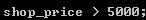
查询结果集--在结构上可以当成表看
select count(*) from 表名, 查询的就是绝对的行数,哪怕某一行所有字段全为NULL,也计算在内.
而select couht(列名) from 表名,
查询的是该列不为null的所有行的行数.
用count(*),count(1),谁好呢?
其实,对于myisam引擎的表,没有区别的.
这种引擎内部有一计数器在维护着行数.
Innodb的表,用count(*)直接读行数,效率很低,因为innodb真的要去数一遍.
Group
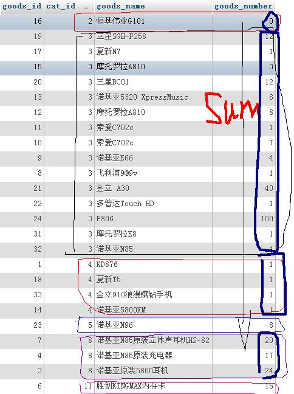
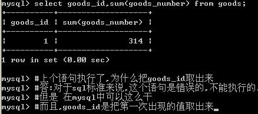
思考:
全班同学排队,
校长对老师说: 统计班级同学的姓名和平均年龄[返回1行]
语义上的疑问: 平均年龄好算,只有一个结果,但是,把谁的姓名和平均年龄放在一块返回呢?
语义上就解释不通,但是mysql中却偏偏可以取姓名,而且是把队伍的第一位同学的姓名返回.
这是mysql的一个特点,出于可移植性和规范性,不推荐这么写.
严格的讲,以group by a,b,c 为列,则select的列,只能在a,b,c里选择,语义上才没有矛盾.
having
Order by
当最终结果集出来后,可以进行排序.
排序的语法:
Order by 结果集中的列名
desc/asc
例:order by shop_price desc ,按价格降序排列
Order by add_time asc ,按发布时间升序排列.
多字段排序也很容易
Order by 列1 desc/asc , 列2 desc/asc , 列3 desc,asc
Limit 在语句的最后, 起到限制条目的作用
Limit [offset,] N
Offset: 偏移量,----跳过几行
N: 取出条目
Offset,如果不写,则相当于 limit 0,N
思考: 取出每个栏目下的最新的商品???
20分钟,1个select语句实现,
良好的理解模型
Where 表达式 ,把表达式放在行中,看表达式是否为真
列: 理解成变量,可以运算
取出结果: 可以理解成一张临时表
子查询
Where型子查询: 指把内层查询的结果作为外层查询的比较条件.
典型题:查询最大商品,最贵商品
Where型子查询
如果 where 列=(内层sql),则内层sql返回的必是单行单列,单个值
如果 where 列 in (内层sql), 则内层sql只返回单列,可以多行.
From 型子查询: 把内层的查询结果当成临时表,供外层sql再次查询
典型题:查询每个栏目下的最新/最贵商品
Exists子查询 : 把外层的查询结果,拿到内层,看内层的查询是否成立.
典型题: 查询有商品的栏目
集合(set)的知识
高中时学过的集合
 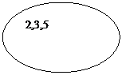集合的特点: 无序性,下面两个集合是等价的
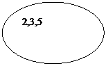集合的特点: 无序性,下面两个集合是等价的
集合的特点:唯一性
下面这个集合是一个错误的集合,没有满足唯一性.
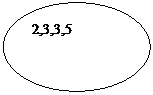
集合的运算: 求并集,求交集,笛卡尔积(相乘)
笛卡尔积,即集合的元素,做两两的组合.
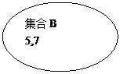
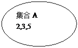
集合A*B = 什么?
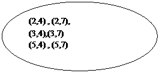
一道数学题:
集合A 有 M个元素
集合B, 有N个元素
A*B = C
C 有多少个元素? 答: M*N行
表与集合的关系
一张表就是一个集合
每一行就是一个元素
疑问:集合不能重复,但我有可能两行数据完全一样
答:mysql内部每一行,还有一个rowid.
两表做全相乘
从行的角度来看: 就是2表每一行,两两组合.
从列的角度来看: 结果集中的列,是两表的列名的相加.
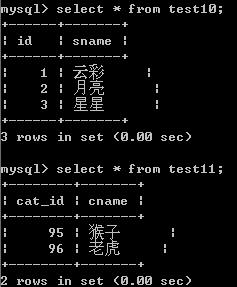
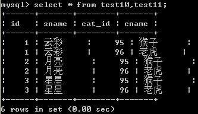
作全相乘时,也可以有针对性的取出某几列.
左连接的语法:
假设A表在左,不动,B表在A表的右边滑动.
A表与B表通过一个关系来筛选B表的行.
语法:
A left join B on 条件 条件为真,则B表对应的行,取出
A left join B on 条件
这一块,形成的也是一个结果集,可以看成一张表 设为C
既如此,可以对C表作查询,自然where,group ,having ,order by ,limit 照常使用
问:C表的可以查询的列有哪些列?
答: A B的列都可以查
/*
左连接 右连接,内连接的区别在哪儿?
*/
同学见面会:
男生表
|
姓名 |
配偶 |
|
屌丝 |
A |
|
李四 |
B |
|
王五 |
C |
|
高富帅 |
D |
|
郑七 |
E |
女生表
|
姓名 |
配偶 |
|
空姐 |
B |
|
大S |
C |
|
阿娇 |
D |
|
张柏芝 |
D |
|
林黛玉 |
E |
|
宝钗 |
F |
主持人大声说:
所有的男士,站到舞台上,带上自己的配偶,(没有的拿块牌子, 上写NULL)
思考:张三上不上舞台呢?
答:上,
问:张三没有对应的行怎么办?
答:用NULL补齐
结果如下
|
姓名 |
配偶 |
女生姓名 |
配偶 |
|
屌丝 |
A |
NULL |
NULL |
|
李四 |
B |
空姐 |
B |
|
王五 |
C |
大S |
C |
|
高富帅 |
D |
阿娇 |
D |
|
高富帅 |
D |
张柏芝 |
D |
|
郑七 |
E |
林黛玉 |
E |
这种情况就是 男生 left join 女生.
主持人说:所有女生请上舞台,有配偶的带着, 没有的,写个NULL补齐.
Select 女生 left join 男生 on 条件
左右连接是可以互换的
A left join B, 就等价于 B right join A
注意：既然左右连接可以互换，尽量用左连接，出于移植时兼容性方面的考虑．
内连接的特点
主持人说： 所有有配偶的男生／女生，走到舞台上来
这种情况下： 屌丝和宝钗都出局
|
姓名 |
配偶 |
女生姓名 |
配偶 |
|
李四 |
B |
空姐 |
B |
|
王五 |
C |
大S |
C |
|
高富帅 |
D |
阿娇 |
D |
|
高富帅 |
D |
张柏芝 |
D |
|
郑七 |
E |
林黛玉 |
E |
如果从集合的角度
A inner join B
和 left join /right join的关系
答： 内连接是左右连接的交集
问题：
主持人说：所有男生／女生，走上舞台．
有配偶的，带着配偶；
没配偶的，拿牌子写ＮＵＬＬ
即：结果是左右连接的并集
这种叫做外连接，但是，在mysql中不支持外连接
两道题！
1:预习union，合并结果集,完成外连接的效果．
2:秘籍5.4用友面试题
2:根据给出的表结构按要求写出SQL语句。
Match 赛程表
|
字段名称 |
字段类型 |
描述 |
|
matchID |
int |
主键 |
|
hostTeamID |
int |
主队的ID |
|
guestTeamID |
int |
客队的ID |
|
matchResult |
varchar(20) |
比赛结果，如（2:0） |
|
matchTime |
date |
比赛开始时间 |
Team
参赛队伍表
|
字段名称 |
字段类型 |
描述 |
|
teamID |
int |
主键 |
|
teamName |
int |
队伍名称 |
Match的hostTeamID与guestTeamID都与Team中的teamID关联
查出 2006-6-1
到2006-7-1之间举行的所有比赛，并且用以下形式列出：
拜仁 2：0 不来梅 2006-6-21
3 2 2:0
2:5 1:2
3: 国安
2: 申花
5: 红牛
Union:合并2条或多条语句的结果
语法:
Sql1 union sql2
能否从2张表查询再union呢?
答:可以,union 合并的是"结果集",不区分在自于哪一张表.
问:取自于2张表,通过"别名"让2个结果集的列一致.
那么,如果取出的结果集,列名字不一样,还能否union.
答:可以,如下图,而且取出的最终列名,以第1条sql为准
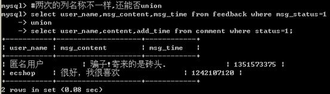
问:union满足什么条件就可以用了?
答:只要结果集中的列数一致就可以.
问:列的类型不一样,也行吗?
答:见上题 .
|
|
|
|
|
|
|
|
|
|
|
|
|
|
|
|
|
|
问: union后结果集,可否再排序呢?
答:可以的.
Sql1 union sql2 order by 字段
注意: order by 是针对合并后的结果集排的序.
问: 使用order by 的注意事项
如下,内层语句的desc怎么没发挥作用呢?
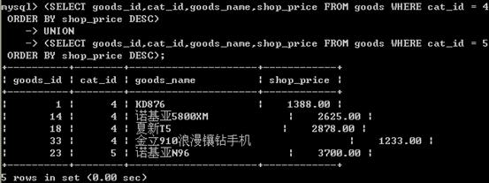
思考如下语句:
(SELECT goods_id,cat_id,goods_name,shop_price FROM goods WHERE cat_id = 4 ORDER BY shop_price DESC)
UNION
(SELECT goods_id,cat_id,goods_name,shop_price FROM goods WHERE cat_id = 5 ORDER BY shop_price DESC)
order by shop_price asc;
外层语句还要对最终结果,再次排序.
因此,内层的语句的排序,就没有意义.
因此:内层的order by 语句单独使用,不会影响结果集,仅排序,
在执行期间,就被Mysql的代码分析器给优化掉了.
内层的order by 必须能够影响结果集时,才有意义.
比如 配合limit 使用. 如下例.
思考下个问题:
查出: 第3个栏目下,价格前3高的商品,和第4个栏目下,价格前2高的商品.
用union来完成

这一次:内层的order by 发挥了作用,因为有limit ,order 会实际影响结果集,有意义.
如果Union后的结果有重复(即某2行,或N行,所有的列,值都一样),怎么办?
答:这种情况是比较常见的,默认会去重.
问:如果不想去重怎么办?
答: union all
如果mysql函数和PHP函数都实现某个功能,优先用哪一个?
1:mysql的函数肯定是要影响查询速度.
应该在建表时,通过合理的表结构减少函数的使用.
比如 email ,按@ 前后拆分.
2:如果确实要用函数,
比如 时间的格式化
在mysql里用date_format,在php里用date可以实现
优先放在业务逻辑层,即php层处理.
3:在查询时使用了函数,最大的一个坏处,
以 date_format(A)为例
则A列的索引将无法使用.
如果你针对某列作操作,而此次查询,又使用的此列的索引.
此时,速度将显著变慢.
例:
sname, email 两列
email加了索引
Select name,email from table where right(email,6)='qq.com';
将会导致此次查询中,
email的索引并不会产生效果.
视图 view
在查询中,我们经常把查询结果 当成临时表来看.
View是什么? View可以看一张虚拟表. 是表通过某种运算得到的一个投影.
既然视图只是表的某种查询的投影,所以主要步骤在于查询表上.
查询的结果命名为视图就可以了.
视图的定义:
视图是由查询结果形成的一张虚拟表.
视图的创建语法:
Create view 视图名 as select 语句;
视图的删除语法:
Drop view 视图名
为什么要视图?
答:1:可以简化查询
2: 可以进行权限控制
把表的权限封闭,但是开放相应的视图权限,视图里只开放部分数据
3: 大数据分表时可以用到
比如,表的行数超过200万行时,就会变慢,
可以把一张的表的数据拆成4张表来存放.
News表
Newsid, 1,2,3,4
News1,news2,news3,news4表
把一张表的数据分散到4张表里,分散的方法很多,
最常用可以用id取模来计算.
Id%4+1 = [1,2,3,4]
比如 $_GET['id'] = 17,
17%4 + 1 = 2, $tableName = 'news'.'2'
Select * from news2 where id = 17;
还可以用视图, 把4张表形成一张视图
Create view news as select from n1 union select from n2 union.........
视图的修改
Alter view 视图名 as select xxxxxx
视图是表的一个影子.
表与视图,数据变化时的相互影响问题.
视图与表的关系
视图是表的查询结果,自然表的数据改变了,影响视图的结果.
视图改变了呢?
0: 视图增删改也会影响表
1: 但是,视图并是总是能增删改的.
视图某种情况下,是可以修改的.
要求: 视图的数据和表的数据 11对应. 就像函数的映射.
表-->推出视图对应的数据
视图-->推出表对应的数据
对于视图insert还应注意,
视图必须包含表中没有默认值的列.
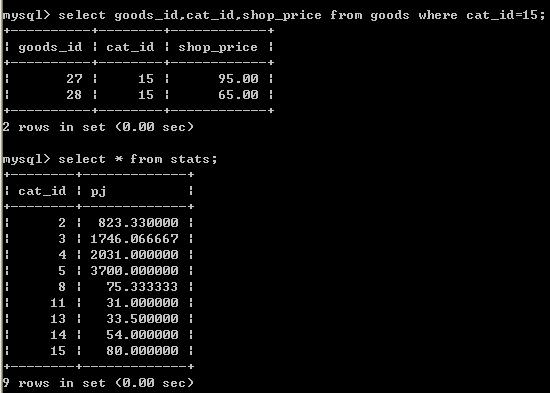
以这个例子而言,平均价来自于多行的的shop_price的计算结果.
如果pj列的值的变子,映射过去,到底修改哪几行shop_price?
视图的algorithm
Algorithm = merge/ temptable/ undefined
Merge: 当引用视图时,引用视图的语句与定义视图的语句合并.
Temptable:当引用视图时,根据视图的创建语句建立一个临时表
Undefined:未定义,自动,让系统帮你选.
Merge,意味着视图只是一个规则,语句规则, 当查询视图时,
把查询视图的语句(比如where那些)与创建时的语句where子句等合并,分析.
形成一条select 语句.
例: 创建视图的语句:
mysql> create view g2 as select goods_id,cat_id,goods_name,shop_price from goods where shop_price>2000
查询视图的语句:
select * from g2 where shop_price < 3000;
最终执行的语句:
select goods_id,cat_id,goods_name,shop_price from goods where shop_price > 2000 and shop_price < 3000
而temptable是根据创建语句瞬间创建一张临时表,
然后查询视图的语句从该临时表查数据.
create algorethm=temptable view g2 as select goods_id,cat_id,goods_name,shop_price from goods where shop_price > 2000
查询视图的语句:
select * from g2 where shop_price < 3000;
最终执行的2句话: 取数据并放在临时表,然后去查临时表.
Select goods_id,cat_id,goods_name,shop_price from goods where shop_price > 2000;
========> temptable
再次查临时表
Select * from temptable where shop_price< 3000
字符集与校对集
Create table 表名(
列声明
) charset utf8;
Mysql的字符集设置非常灵活
可以设置服务器默认字符集
数据库默认字符集
表默认字符集
列字符集
如果某一个级别没有指定字符集,则继承上一级.
以表声明utf8为例:
存储的数据在表中,最终是utf8;
字符集转换器 Gbk--->Utf8-->utf8 GBK->latin1-->Utf8
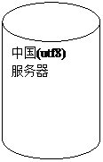
'中国',

1:告诉服务器,我给你发送的数据是什么编码的? character_set_client
2:告诉转换器,转换成什么编码? Character_set_connection
3:查询的结果用什么编码? Character_set_results
如果以上3者都为字符集N, 则可以简写为 set names N
推论: 什么时将会乱码?
1: client声明与事实不符
2:results与客户端页面不符的时候.
什么时间将会丢失数据?
Connetion和服务器的字符集比client小时.
校对集: 指字符集的排序规则
一种字符集可以有一个或多个排序规则.
以Utf8为例, 我们默认使的utf8_general_ci 规则,也可以按二进制来排, utf8_bin
怎么样声明校对集?
Create table ()... Charset utf8 collate utf8_general_ci;
注意:声明的校对集必须是字符集合法的校对集.
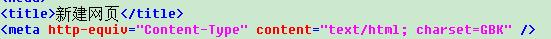
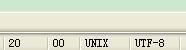
存储引擎
一部电影, mp4,wmv,avi,rmvb,flv, 同样的一部电影,在硬盘上有不同的存储格式,
所占空间与清晰程度也不一样.
表里的数据存储在硬盘上,具体如何存储的?
存储的方式方法也有多种.
对于用户来说 同样一张表的数据,无论用什么引擎来存储,用户看到的数据是一样的.
但是对于服务器来说,有区别.
常用的表的引擎
Myisam ,批量插入速度快, 不支持事务,锁表
Innodb, 批量插入相对较慢,支持事务,锁行.
全文索引:目前5.5版本,myisam,innodb都已经支持
事务:
通俗的说事务: 指一组操作,要么都成功执行,要么都不执行.---->原子性
在所有的操作没有执行完毕之前,其他会话不能够看到中间改变的过程-->隔离性
事务发生前,和发生后,数据的总额依然匹配----->一致性
事务产生的影响不能够撤消------>持久性
如果出了错误,事务也不允许撤消, 只能通过"补偿性事务"
转账
李三: --->支出 500, 李三 -500
赵四: ---->收到500, 赵四 +500
关于事务的引擎:
选用innodb /bdb
开启事务: start transaction;
Sql....
Sql....
Commit 提交
rollback 回滚
注意: 当一个事务commit,或者rollback就结束了
注意:有一些语句会造成事务的隐式的提交,比如 start transaction
事务 的基本原理 (了解)
表数据文件
不用事务,直接作用于表
用了事务之后,
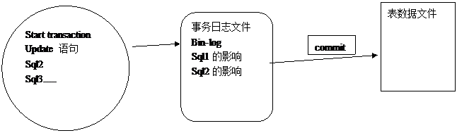
触发器:trigger, 枪击,扳击,引线的意思
一触即发,
作用: 监视某种情况并触发某种操作.
观察以下场景:
一个电子商城,
商品表, g
|
主键 |
商品名 |
库存 |
|
1 |
电脑 |
28 |
|
2 |
自行车 |
12 |
订单表, o
|
订单主键 |
商品外键 |
购买数量 |
|
1 |
2 |
3 |
|
2 |
1 |
5 |
完成下单与减少库存的逻辑
Insert into o (gid,num) values (2,3); // 插入语句
Update g set goods_num = goods_num - 3 where id = 2;// 更新过程
这两个逻辑可以看成一个整体,或者说, insert ---> 引来 update
用触发器可以解决上述问题.
我们可以监视某表的变化,当发生某种变化时,触发某个操作.
触发器:
能监视: 增,删,改
触发操作: 增,删,改
四要素:
监视地点
监视事件
触发时间
触发事件
创建触发器的语法
Create trigger triggerName
After/before insert/update/delete on 表名
For each row #这句话是固定的
Begin
Sql语句; # 一句或多句,insert/update/delete范围内
End;
删除触发器的语法:
Drop trigger 触发器名
查看触发器
Show triggers
如何在触发器引用行的值
对于insert而言, 新增的行 用new 来表示,
行中的每一列的值 ,用new.列名来表示.
对于 delete来说, 原本有一行,后来被删除,
想引用被删除的这一行,用old,来表示, old.列名,就可以引用被删行中的值.
对于update来说,
被修改的行,
修改前的数据 ,用 old来表示, old.列名引用被修改之前行中的值
修改后的数据,用new 来表示, new.列名引用被修改之后行中的值
触发器里after 和before的区别
After 是先完成数据的增,删,改再触发,
触发的语句晚于监视的增,删,改,无法影响前面的增删改动作.
Before是先完成触发,再增删改,
触发的语句先于监视的增,删,改发生,我们有机会判断,修改即将发生的操作.
典型案例:
对于所下订单,进行判断,如果订单的数量 > 5 ,就认为是恶意订单,
强制把所订的商品数量改成5
备份与恢复
系统运行中, 增量备份,与整体备份.
例: 每周日整体备份一次, 周一到周六备份当天.
如果周五出了问题,可以用周日的整体 + 周一,二,三,四来恢复.
备份的工具
有第3方的收费备份工作,
目前我们所学的是系统自带的备份功能, mysqldump
Mysqldump可以导出
库
表
例1: 导出mugua库下面的表
Mysqldump -u用户名 -p密码 库名 表1 表2 表3 > 地址/备份文件名称
导出的是建表语句及insert语句
例2:如何导出一个库下面的所有表?
Mysqldump -u用户名 -p密码 库名 > 地址/备份文件名称
例3: 如何导出以库为单位导出?
Mysqldump -u用户名 -p密码 -B 库1 库2 库3 > 地址/备份文件名称
例4: 如何导出所有库?
Mysqldump -u用户名 -p密码 -A > 地址/备份文件名称
恢复:
1:登陆到mysql命令行
对于库级的备份文件
Mysql> source 备份文件地址
对于表级的备份文件
Mysql > use 库名
Mysql> source 备份文件地址
2:不登陆到mysql命令行
针对库级的备份文件
Mysql -u用户名 -p密码 < 库级备份文件地址
针对表级的备份文件
Mysql -u用户名 -p密码 库名 < 表级备份文件地址
索引
索引:是针对数据所建立的目录.
作用: 可以加快查询速度
负面影响: 降低了增删改的速度.
案例:
设有新闻表15列,10列上有索引,共500W行数据, 如何快速导入?
1:把空表的索引全部删除
2:导入数据
3:数据导入完毕后,集中建索引.
索引的创建原则:
1:不要过度索引
2:在where条件最频繁的列上加.
3:尽量索引散列值,过于集中的值加索引意义不大.
索引的类型
普通索引: index 仅仅是加快查询速度.
唯一索引: unique index 行上的值不能重复
主键索引: primary key 不能重复.
主键必唯一,但是唯一索引不一定是主键.
一张表上,只能有一个主键, 但是可以用一个或多个唯一索引.
全文索引 : fulltext index
(上述3种索引,都是针对列的值发挥作用,但全文索引,可以针对值中的某个单词,比如一篇文章,)
建立索引
可以在建表时,直接声明索引,即在列声明完毕后,声明索引.
例如下:
create table test5 (
id int,
username varchar(20),
school varchar(20),
intro text,
primary key (id),
unique (username),
index (school),
fulltext (intro)
) engine myisam charset utf8;
查看一张表上所有索引
Show index from 表名
建立索引
Alter table 表名 add index /unique/fulltext [索引名] (列名)
Alter table 表名 add
primary key (列名)
// 不要加索引名,因为主键只有一个
删除索引
删除非主键索引:Alter table 表名 drop index 索引名;
删除主键: alter table 表名 drop primary key
关于全文索引的用法
Match (全文索引名) against ('keyword');
关于全文索引的停止词
全文索引不针对非常频繁的词做索引,
如this, is, you, my等等.
全文索引:在mysql的默认情况下, 对于中文意义不大.
因为英文有空格,标点符号来拆成单词,进而对单词进行索引.
而对于中文,没有空格来隔开单词,mysql无法识别每个中文词.
存储过程: procedure
概念类似于函数,就是把一段代码封装起来,
当要执行这一段代码的时候,可以通过调用该存储过程来实现.
在封装的语句体里面,可以用if/else, case,while等控制结构.
可以进行sql编程.
查看现有的存储过程:
Show procedure status
删除存储过程
Drop procedure 存储过程的名字
调用存储过程
Call 存储过程名字();
第1个存储过程 ,体会"封装sql"
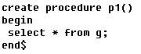
第2个存储过程, 体会"参数"
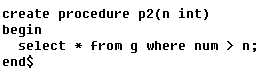
第3个存储过程,体会"控制结构"
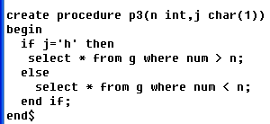
第4个存储过程,体会"循环"
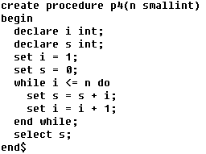
在mysql中,存储过程和函数的区别,
一个是名称不同,
二个就是存储过程没有返回值.